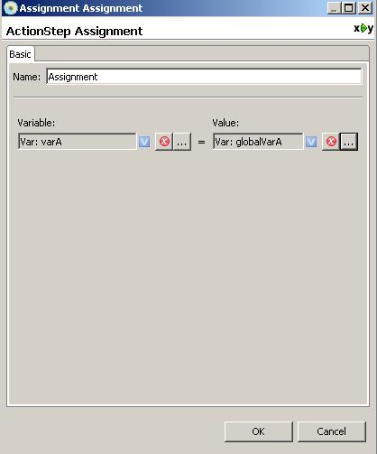
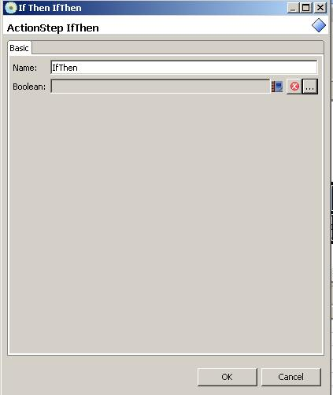
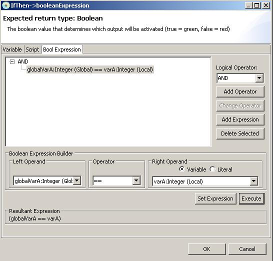
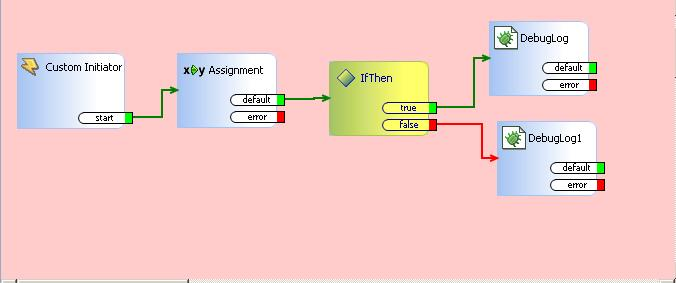
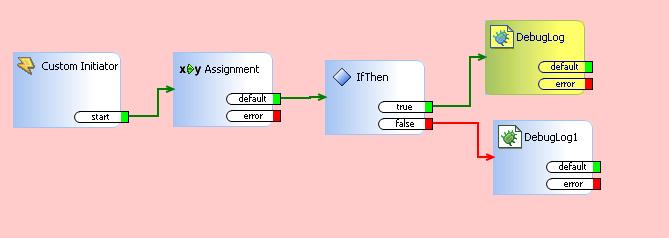
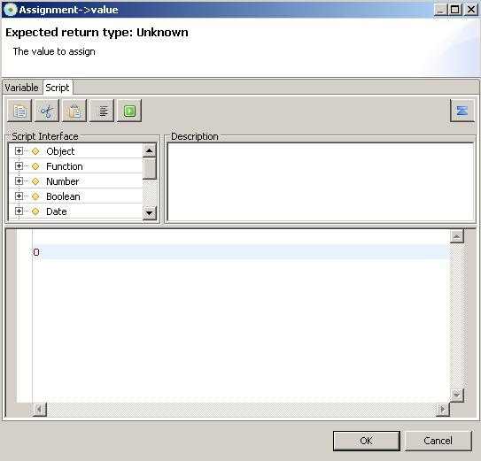
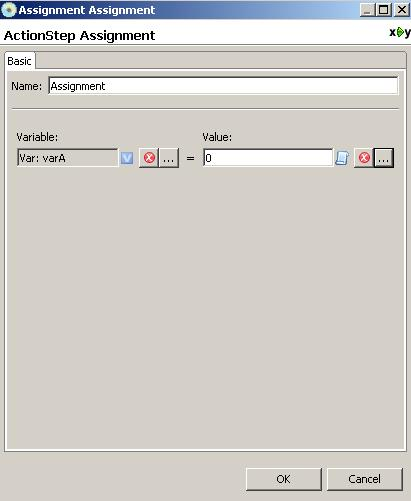
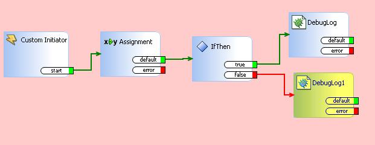

If Structures
add
IfThen actionstep in your saflet. Ifthen action step will evaluate true
or false condition and take a path according to given condtion.
first we will evaluate true condition. double click assignment
actionstep and bring up action dialog.
We assign value of globalVarA to current variable varA so that value of
varA and value of globalVarA be the same.

double clicking ifthen action step should bring up ifthen action step
dialog.

Clicking boolean value field shoud bring up boolean expression
dialog and this will return boolean expression.
Boolean expression is basically true or false value when it is
evaluated. There are three cases you can assign boolean value.
First, you can assign boolean variable which is true or false value.
Second, you can do script processing and assign boolean value
through script.
Third, you can use boolean expression editor and assign boolean
expression. In here, we will use boolean expression editor.
We choose globalVarA variable as a left operand and choose varA
variable as a right operand. We know this expression should resolve as
true in saflet because we assigned globlaVarA to varA in assignment
actionstep. Clicking Set Expression button will set expression. Also
you can build sophisticated combinatoric logic as you need.

By debugging saflet, you can verify whether saflet is taking correct
logical path or not.
This saflet should take true path after ifthen action step because we
assigned same value in assignment step.

It does take true path correctly.

Now, change assignment value to be something different. Let's assign 0
instead.

so, now varA will contain value 0 in exeuction of assignment actionstep
instead of global variable value.

You can verify that it is taking false path by debugging saflet.
